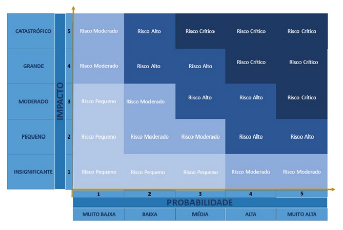

2. Visão Geral do Projeto
2.1 Organização do Projeto
| Papel | Atribuições | Responsável | Participantes |
|---|---|---|---|
| Pessoa Desenvolvedora | Codificar o produto, realizar refatoração, testar, configurar, versionar, evoluir, integrar, documentar, ata das reuniões, estratégia de código | Daniel Rodrigues | Jesus Gabriel, João Pedro, Marco Tulio, Joyce, Lucas Antunes |
| Líder do Time | Delegar tarefas, duração da Ciclo, organização das atividades, one-to-one com os membros, estratégia de produto | Marco Tulio | Daniel Rodrigues |
| Pessoa Engenheira de Requisitos | Descobrir, elicitar, analisar, consensuar, declarar, representar, organizar e atualizar requisitos | Marco Tulio | Lucas,Daniel,Joyce |
| Cliente | Fornecer insumos para requisitos, fornecer feedbacks sobre os produtos, priorizar requisitos | Lucas Antunes | Arthur Bennet |
| Monitor | Verificar requisitos, fornecer feedbacks sobre o processo de ER, auxiliar em dúvidas da equipe acerca da disciplina de requisitos, articular os interesses do professor | João Pedro | Pedro Henrique |
2.2 Planejamento das Fases do Projeto
| Ciclo | Produto (Entrega) | Data Início | Data Fim |
|---|---|---|---|
| Ciclo 1 | Requisitos descobertos, elicitados, analisados e consensuados | 10/07/24 | 17/07/24 |
| Ciclo 2 | Requisitos validados, verificados e declarados | 17/07/24 | 24/07/24 |
| Ciclo 3 | Requisitos organizados e atualizados, escopo definido do MVP e Funcionalidades Incrementais | 24/07/24 | 31/07/24 |
| Ciclo 4 | Reestruturação da Equipe | 31/07/24 | 07/08/24 |
| Ciclo 5 | US01, US02 e US03 | 07/08/23 | 14/08/23 |
| Ciclo 6 | US06, US04 e US07 | 14/08/23 | 21/08/23 |
| Ciclo 7 | US05, US08 e US09 | 21/08/23 | 28/08/23 |
| Ciclo 8 | US10 e US11 | 28/08/23 | 04/09/23 |
| Ciclo 9 | Testes e Revisão | 04/09/23 | 11/09/23 |
2.3 Matriz de Comunicação
| Descrição | Área/Envolvidos | Periodicidade | Produtos Gerados |
|---|---|---|---|
| Acompanhamento das atividades em progresso | Equipe do Projeto | Semanal | Relatorio de Situação do Projeto |
| Acompanhamento de Ciclo | Equipe do Projeto e Monitor | Semanal | Ata da Reunião, Relação de Feedbacks sobre as Entregas do Produto |
| Comunicar a situação do projeto | Equipe do Projeto e Professor | Mensalmente | Artefatos solicitados, Relação de Feedbacks do Professor |
2.4 Gerenciamento de Riscos
A análise e gerenciamento de riscos referem-se à identificação dos possíveis pontos que podem representar riscos para o projeto. Precisam ser acompanhados, a cada acompanhamento das fases, se referindo assim, ao projeto como um todo e não apenas ao produto.
Segundo Charette, existem três tipos de riscos de Software (PRESSMAN,2006):
- Riscos de projeto: mostram problemas potenciais de orçamento, cronograma, organizacionais que impactam o projeto;
- Riscos técnicos: perturbam a qualidade e a entrega do software. Também mostram problemas potenciais de projeto, implementação, interface, verificação e manutenção;
- Riscos de negócio: ameaçam a viabilidade do software e do produto e apresentam 5 variações:
- Risco de Mercado: criar um excelente produto ou sistema que ninguém realmente quer;
- Risco Estratégico: criar um produto que não se encaixe mais na estratégia geral de negócios da empresa;
- Risco de Vendas: criar um produto que a equipe de vendas não sabe como vender;
- Risco Gerencial: perda de suporte da alta gerência devido à mudança no foco ou mudança de profissionais;
- Risco de Orçamento: perda do orçamento ou do comprometimento dos profissionais.
A análise dos riscos levará em consideração 2 variáveis:
2.4.1 Probabilidade
A probabilidade indica a chance de um risco se materializar no projeto. Quanto maior a probabilidade, maior a chance de o risco ocorrer, o que exige maior atenção e planejamento. Ao identificar e avaliar esses riscos, a equipe de projeto pode desenvolver estratégias para mitigar ou gerenciar os impactos potenciais, aumentando as chances de sucesso do projeto.
| Probabilidade | Intervalo | Peso |
|---|---|---|
| Muito Alta | 81% à 100% | 5 |
| Alta | 61% à 80% | 4 |
| Média | 41% à 60% | 3 |
| Baixa | 21% à 40% | 2 |
| Muto Baixa | 0% à 20% | 1 |
2.4.2 Impacto
Para se quantificar o impacto do risco no projeto o custo, o tempo, o escopo e a qualidade devem ser levados em conta:
| Impacto | Descrição | Peso |
|---|---|---|
| Catastrófico | Impacto Inviabiliza o Projeto | 5 |
| Grande | Há grande impacto no desenvolvimento do projeto | 4 |
| Moderado | Possui certo impacto, porém é facilmente recuperado | 3 |
| Pequeno | Pouco impacto no desenvolvimento do projeto | 2 |
| Insignificante | Impacto pouco expressivo no desenvovimento do Projeto | 1 |
2.4.3 Prioridade
Através da equação [(Probabilidade) x (Impacto)] é possível calcular a prioridade dos riscos. A partir desses valores é determinada a urgência da inicialização de medidas de mitigação e resolução dos riscos, tal como na matriz abaixo:

2.3.4 Histórico de Riscos:
| Ciclo | Tipo de Risco | Probabilidade | Impacto | Grau do Risco - Prioridade | Contramedida Tomada |
|---|---|---|---|---|---|
| Ciclo 1 | Risco de Projeto | Muito Baixa | Catastrófrico | Risco Moderado | Após a greve de docentes, todo o cronograma foi redefinido |
| Ciclo 2 | Risco de Projeto | Média | Pequeno | Risco Pequeno | Alocação de mais responsáveis em certas atribuições |
| Ciclo 2 | Risco de Projeto | Baixa | Grande | Risco Alto | Adoção de outros meios de comunicação com o Cliente |
| Ciclo 4 | Risco de Projeto | Alta | Moderado | Risco Alto | Promover 1 intervalo de descanso, sem atividade durante 1 ciclo para a motivação do time |
| Ciclo 5 | Risco de Projeto | Alta | Moderado | Risco Alto | A atividade foi estendida, e novos responsáveis foram alocados. |
| Ciclo 6 | Risco de Projeto | Alta | Grande | Risco Alto | A atividade foi estendida, e novos responsáveis foram alocados. |
| Ciclo 7 | Risco de Projeto | Alta | Grande | Risco Alto | A atividade foi estendida, e novos responsáveis foram alocados. |
2.5 Critérios de Replanejamento
Os critérios de replanejamento referem-se à identificação dos pontos que, caso ocorram, causarão um replanejamento do projeto. Precisam ser acompanhados a cada Ciclo, referindo-se assim, ao projeto como um todo e não apenas ao produto.
2.5.1 Identificação de Critérios:
C01 - Alteração nos prazos das entregas
Categoria: Risco de Projeto.
Causa: Atrasos ou imprevistos provocaram débitos de algumas atividades.
Consequência: Extensão dos prazos das atividades debitadas.
C02 - Alteração das Tecnologias do projeto
Categoria: Risco Técnico.
Causa: Troca de linguagem de programação ou qualquer ferramenta de gestão e controle do time.
Consequência: Refatoração do código ou reorganização do projeto nas novas ferramentas de gestão.
C03 - Alteração no Processo de Engenharia de Requisitos ou Desenvolvimento de Software
Categoria: Risco Técnico.
Causa: Mudança no método de organizção do time, método de organização dos requisistos ou produção.
Consequência: Reorganização dos papéis do time e atualização de documentação dos requisistos e do processo.
C04 - Alteração no Escopo do Projeto
Categoria: Risco de Projeto.
Causa: Surgimento de novos requisitos.
Consequência: Replanejamento do projeto.
C05 - Barreiras externas para execução do projeto, tais como: aparatos legais, valor financeiro inacessível, capacidade dos hardwares dos desenvolvedores, etc
Categoria: Risco Técnico.
Causa: Qualquer problema não gerado pelo time de desenvolvimento, isto é, problemas fogem do controle do processo de desenvolvimento.
Consequência: Estudo do problema e adaptação do time para reverter o problema.
C06 - Saída de algum membro da equipe
Categoria: Risco de Projeto.
Causa: Membro retirou ou trancou a disciplina.
Consequência: Realocação dos membros desenvolvedores nas atividades do projeto.
C07 - Divergência de horários entre membros da equipe
Categoria: Risco de Projeto.
Causa: Membros com grades horárias muito distintas.
Consequência: Dificuldade para reunir toda a equipe e realizar os pareamentos.
C08 - Dificuldades da equipe com as novas tecnologias inseridas
Categoria: Risco Técnico.
Causa: Inexperiência de alguns membros.
Consequência: Surgimento de dívidas técnicas pela dificuldade em realizar os objetivos propostos.
C09 - Ausência de membros durante reuniões do grupo
Categoria: Risco de Projeto.
Causa: Membros sobrecarregados ou desestimulados com o projeto.
Consequência: Membros perdidos na sprint e maior carga de trabalho para o restante da equipe.
C10 - Problemas pessoais ou de saúde
Categoria: Risco de Projeto.
Causa: Problemas pessoais/doenças ou viagens dos membros da equipe.
Consequência: Capacidade de trabalho da equipe prejudicada e atrasos no cronograma.
C11 - Falta de comprometimento dos membros com o projeto
Categoria: Riscos de Projeto.
Causa: Desânimo com o curso, problemas pessoais ou de saúde, excesso de compromissos, entre outros.
Consequência: Issues não entregues, dívida técnica e replanejamento.
Os critérios de replanejamento do projeto devem ser acompanhados e atualizados a cada fase. E, aplicados, conforme necessidade.
2.3.4 Histórico de Riscos:
| Ciclo | Problema | Solução Encontrada | Resultado Esperado |
|---|---|---|---|
| Ciclo 1 | C01 | Paralização do projeto RISO durante a greve e Refurmulação de todo o Cronograma de ciclos | Definição e reestruturação completa do desenvolvmento do Projeto |
| Ciclo 1 | C11 | Utilização da ferramenta Jira para acompanhar, de forma mais rídiga, o controle do progresso do time | Controle maior sobre as obrigações do time e maior liberdade de produção aos membros |
| Ciclo 2 | C10 | Redistribuição dos membros nas atividades para suprir os membros que entraram de viagem | As atividades foram uniformemente distribuídas |
| Ciclo 2 | C09 | Exposição das Pautas debatidas na reunião em forma de ata para os membros ausentes | Acesso à todo o conteúdo perdido para os membros ausentes |
| Ciclo 2 | C01 | Debitamento da atividade atrasada para o ciclo seguinte e adição de um responsável auxiliar | Conclusão da Atividade no prazo |
| Ciclo 2 | C11 | Motivação de uma maior comunicação pelo WhatsApp entre os membros | Maior comunicação e engajamento do time com o projeto |
| Ciclo 4 | C11 | Interrupção das atividades do ciclo | Maior energia e motivação para recomeçar as atividades |
| Ciclo 4 | C01 | Redistribuição das US do projeto para compensar a paralisação do ciclo anterior | Entrega das funcionalidades dentro do prazo |
| Ciclo 5 | C11 | A atividade foi estendida, e novos responsáveis foram alocados. | Maior energia e motivação para continuar as atividades |
| Ciclo 5 | C08 | A atividade foi estendida, e novos responsáveis foram alocados. | Atraso nas atividades devido a inexperiência de alguns membros sera resolvida |
| Ciclo 6 | C11 | A atividade foi estendida, e novos responsáveis foram alocados. | Maior energia e motivação para continuar as atividades |
| Ciclo 6 | C08 | A atividade foi estendida, e novos responsáveis foram alocados. | Atraso nas atividades devido a inexperiência de alguns membros sera resolvida |
| Ciclo 7 | C11 | A atividade foi estendida, e novos responsáveis foram alocados. | Maior energia e motivação para continuar as atividades |
| Ciclo 7 | C08 | A atividade foi estendida, e novos responsáveis foram alocados. | Atraso nas atividades devido a inexperiência de alguns membros sera resolvida |
Histórico de Versão:
| Data | Versão | Descrição | Autor | Revisores |
|---|---|---|---|---|
| 31/07/24 | 1.0 | Criação do documento | Daniel Rodrigues | Jésus Gabriel |
| 04/09/24 | 1.1 | Atualização do documento | Jésus Gabriel | Daniel Rodrigues |